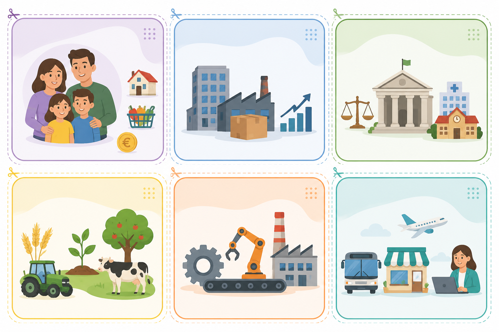
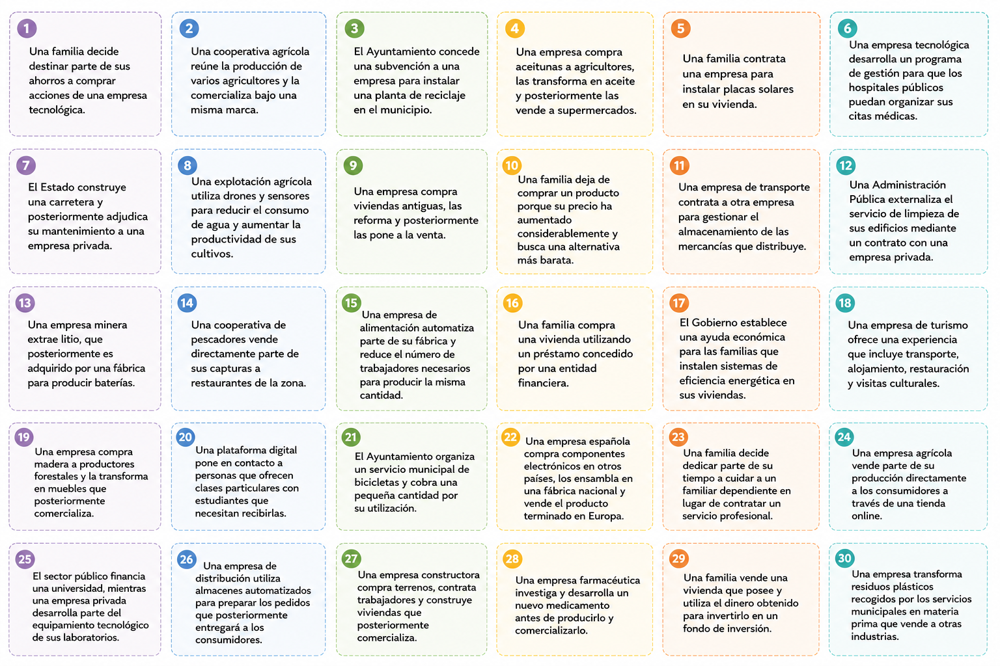

JUGAMOS: ¿QUIÉN MUEVE LA ECONOMÍA?
En equipo, recibiréis un conjunto de tarjetas con diferentes situaciones económicas. Vuestra misión será analizar cada situación y clasificarla atendiendo a los agentes económicos que intervienen y al sector o sectores económicos relacionados con la actividad.
¿Cómo se juega?
| Leed atentamente cada tarjeta y comentadla entre todos los miembros del equipo. Colocad cada tarjeta junto a la categoría de agente económico que consideréis adecuada. Identificad también el sector económico al que pertenece la actividad. Algunas tarjetas pueden incluir más de un agente o más de un sector. En estos casos, no busquéis una única respuesta: analizad qué actividades aparecen y justificad vuestra clasificación. Si una tarjeta genera dudas, colocadla en la zona de "DEBATE" y preparad una explicación para defender vuestra decisión ante el resto de la clase. |
Las tarjetas trampa
|
Algunas situaciones están diseñadas para que tengáis que pensar como economistas. En ellas pueden intervenir simultáneamente varios agentes o desarrollarse actividades pertenecientes a distintos sectores. Cuando hayáis terminado, cada equipo seleccionará una tarjeta que considere más complicada y explicará al resto de la clase cómo la ha clasificado y qué argumentos ha utilizado. En esta actividad no gana el equipo que termina antes, sino el que consigue clasificar, argumentar y justificar mejor sus decisiones económicas. |
¿Cómo se consiguen los puntos?
|
Cada equipo irá acumulando puntos a medida que clasifique y justifique las tarjetas:
|


Reflexión final...
¿Por qué crees que es útil distinguir entre agentes económicos y sectores económicos para comprender cómo funciona una economía? Explícalo utilizando un ejemplo propio.